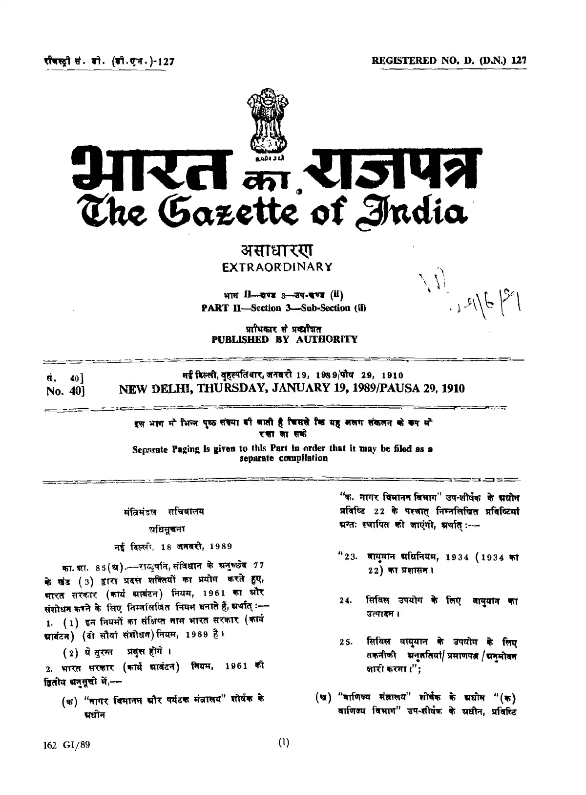
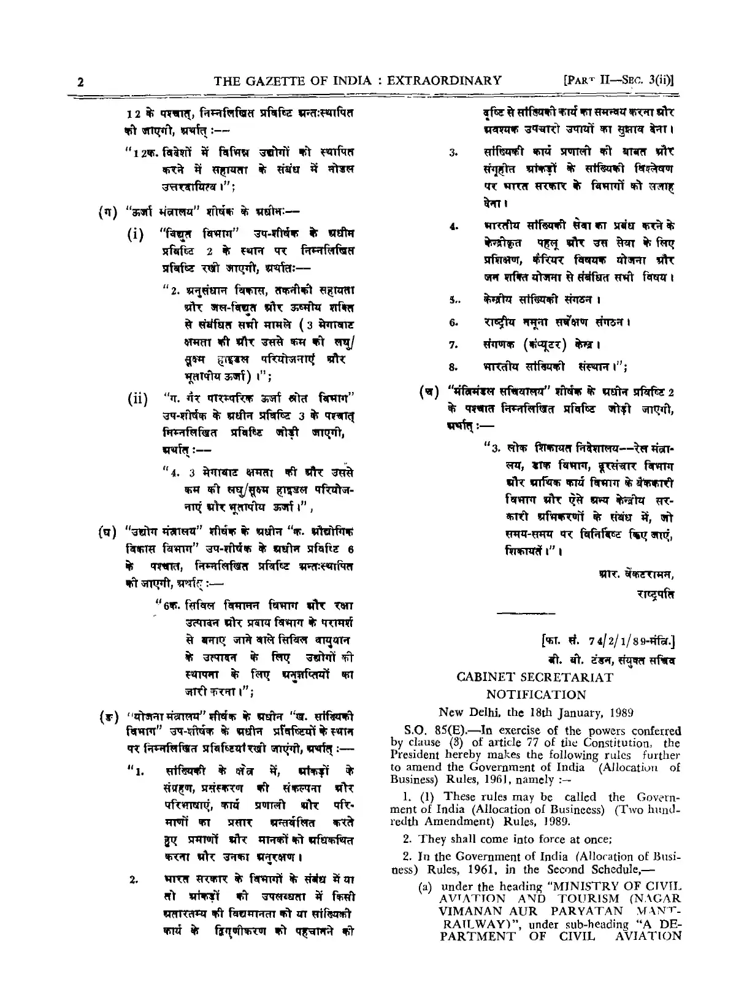
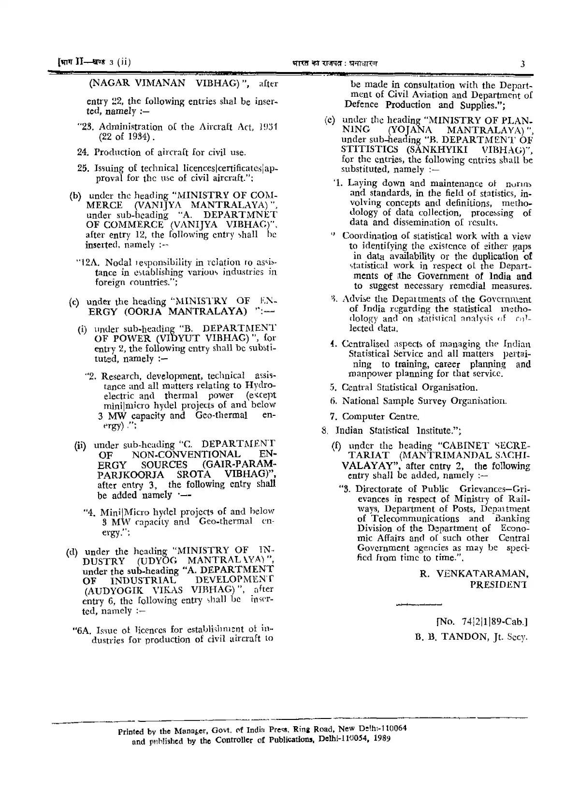

Amendment #200 (S.O. 85(E), 1989)
7 changes: 0 to the First Schedule, 7 to the Second Schedule. 7 applied
The order, page by page
Page 1 of 4

Page 2 of 4

1after Schedule 2 › MINISTRY OF CIVIL AVIATION AND TOURISM › DEPARTMENT OF CIVIL AVIATION › entry 22
- 28. Administration of the Aircraft Act, 1931 (22 of 1984).
- 24. Production of aircraft for civil use.
- 25. Issuing of technical licences|certificates approval for the use of civil aircraft.
applied at schedule 2 › ministry MINISTRY OF CIVIL AVIATION AND TOU- RISM › department A › entry 28 in the Rules after #200
Page 3 of 4

234567after Schedule 2 › MINISTRY OF COMMERCE › DEPARTMNÉT OF COMMERCE › entry 12
- 12A. Nodal responsibility in relation to assistance in establishing various industries in foreign countries.
applied at schedule 2 › ministry MINISTRY OF COMMERCE › department A › group_heading II › entry 12A in the Rules after #200
states inferred loose
Schedule 2 › MINISTRY OF ENERGY › DEPARTMENT OF POWER › entry 2
- 2. Research, development, technical assistance and all matters relating to Hydroelectric and thermal power (except mini micro hydel projects of and below 3 MW capacity and Geo-thermal energy).
applied at schedule 2 › ministry MINISTRY OF ENERGY › department B › entry 2 in the Rules after #200
after Schedule 2 › MINISTRY OF ENERGY › DEPARTMENT OF NON-CONVENTIONAL ENERGY SOURCES › entry 3
- 4. Mini Micro hydel projects of and below 8 MW capacity and Geo-thermal c'nergy.
applied at schedule 2 › ministry MINISTRY OF ENERGY › department C › entry 4 in the Rules after #200
after Schedule 2 › MINISTRY OF INDUSTRY › DEPARTMENT OF INDUSTRIAL DEVELOPMENT › entry 6
- 6A. Issue of licences for establishment of industries for production of civil aircraft to be made in consultation with the Department of Civil Aviation and Department of Defence Production and Supplies.
applied at schedule 2 › ministry MINISTRY OF INDUSTRY › department A › group_heading III › entry 6A in the Rules after #200
Schedule 2 › MINISTRY OF PLANNING › DEPARTMENT OF STITISTICS
- 1. Laying down and maintenance of nonas and standards, in the field of statistics, involving concepts and definitions, methodology of data collection, processing of data and dissemination of results. Coordination of statistical work with a view. to identifying the existence of either gaps. in data…
- 3. Advise the Departments of the Government of India regarding the statistical metholology and on statistical analysis of collected data.
- 4. Centralised aspects of managing the Indian Statistical Service and all matters pertaining to training, career planning and manpower planning for that service.
- 5. Central Statistical Organisation.
- 6. National Sample Survey Organisation.
- 7. Computer Centre.
and 1 more
- 8. Indian Statistical Institute.
applied at schedule 2 › ministry MINISTRY OF PLANNING › department B in the Rules after #200
states inferred loose
after Schedule 2 › CABINET SECRETARIAT › entry 2
- 8. Directorate of Public Grievances-Grievances in respect of Ministry of Railways, Department of Posts, Department of Telecommunications and Banking Division of the Department of Economic Affairs and of such other Central Government agencies as may be specified from time to time.
applied at schedule 2 › ministry CABINET SECRETARIAT › entry 8 in the Rules after #200
Page 4 of 4
How this document was read
Changes placed by an inference rule
| Change | Rule | Status | What |
|---|---|---|---|
| 2 | loose | accepted | change 2: department DEPARTMNÉT OF COMMERCE taken for department DEPARTMENT OF COMMERCE, named loosely |
| 6 | loose | accepted | change 6: department DEPARTMENT OF STITISTICS taken for department DEPARTMENT OF STATISTICS, named loosely |
From the Government of India (Allocation of Business) Rules, 1961 and their amendments, as published by the Cabinet Secretariat (cabsec.gov.in), read by orgpedia. The readings of the older scanned gazettes have known gaps.